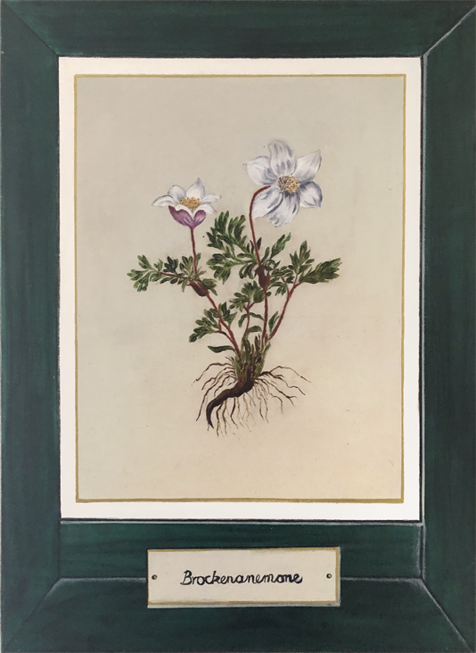
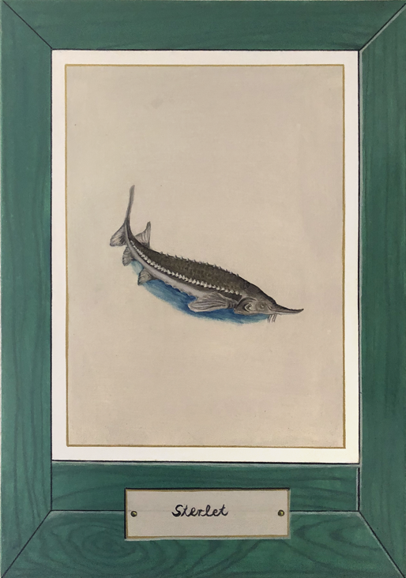
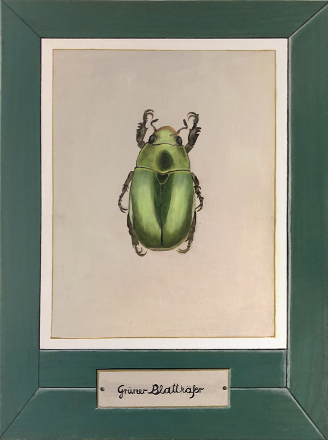
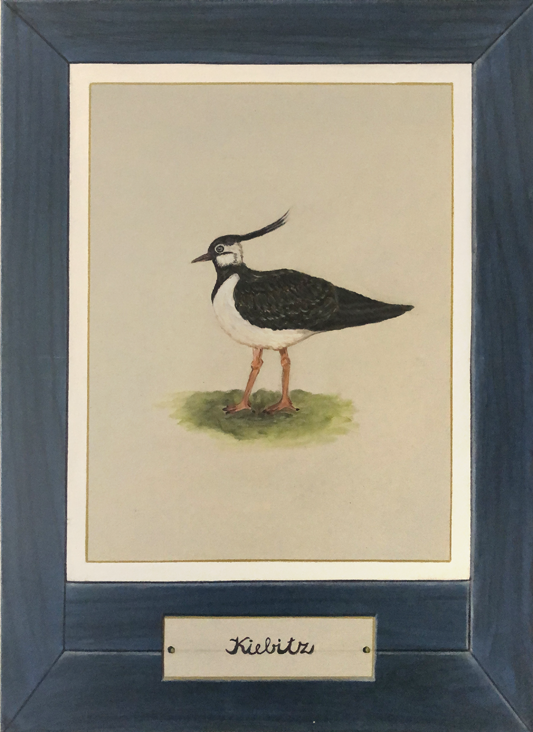
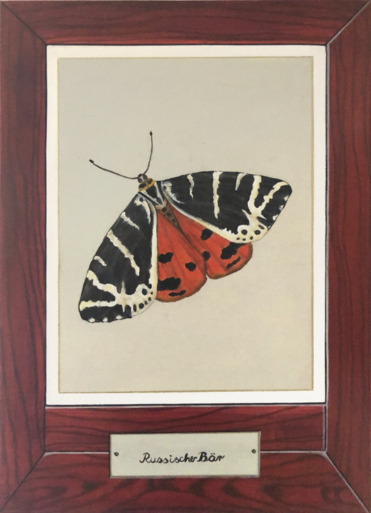
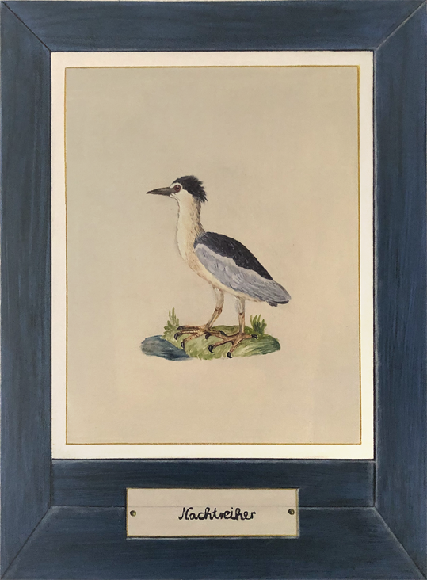
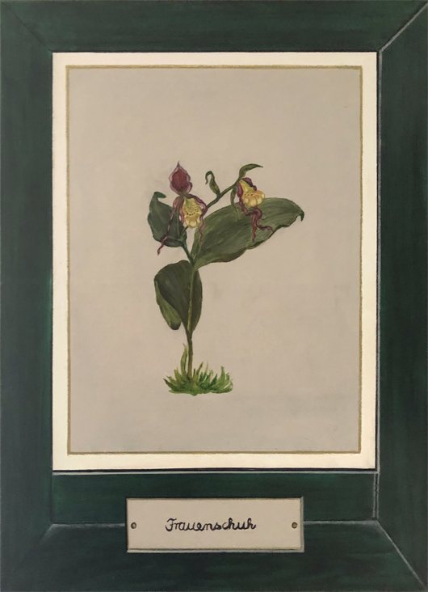
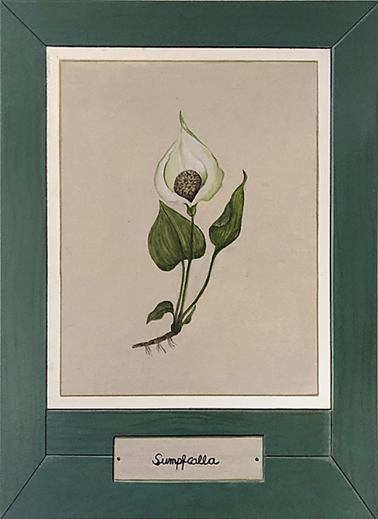

Projekt „Kultur ans Netz“
Diese Webseite und die hier gezeigten Arbeiten verdanken ihre Entstehung dem vom Land Sachsen-Anhalt ausgelobten und von der Investitionsbank Sachsen-Anhalt finanziell geförderten Projekt „Kultur ans Netz“. In meinem Fall handelt es sich um die Umsetzung der künstlerischen Tätigkeit in digitale Formate einschließlich der Recherche.
Inhaltlich widmet sich mein Projekt der Umweltproblematik. Diese ist für mich ein wesentliches Thema, das meines Wissens nach noch zu wenig in den kreativen Bereich eingeflossen ist.
Es sollen Beispiele aus der „Roten Liste bedrohter Tier- und Pflanzenarten“ der UICN (Internationale Union für Naturschutz) als Einzeldarstellungen großformatig und digital öffentlich gezeigt werden, in klassischer Ölmalerei, versehen mit einem kurzem Begleittext zu ihrer Bedeutung in unserem Ökosystem. Pflanzen, Tiere und Insekten sollen als Solitäre in ihrer Schönheit sichtbar gemacht werden und so auf die Verletzlichkeit der uns umgebenden Lebensformen aufmerksam zu machen.
{kind=link}

Brockenanemone
Diese zarte Pflanze kann heute nur noch durch permanente Pflegemaßnahmen auf dem Brocken. überleben. Die Brockenanemone ist in ihrem Wachstum nicht dominant und auf karge Böden angewiesen. Diese Art von Lebensraum ist selten geworden, so auch auf dem Brocken. Der Eintrag von Nährstoffen sorgt dafür, dass sich immer mehr Gräser ausbreiten und die Brockenanemone verdrängen.
{kind=link}

Sterlet
Der Sterlet ist der einzige ganzjährig im Süßwasser lebende Vertreter aus der Familie der Störe. In der Donau, seinem natürlichen Lebensraum, ist er aufgrund von Lebensraumverlust und Beeinträchtigung der Wanderstrecken vom Aussterben bedroht.
{kind=link}

Grüner Blattkäfer, auch Rosenkäfer
Der Rosenkäfer kommt in ganz Deutschland, sowie im Süden und in der Mitte Europas vor. Laut Bundesartenschutzverordnung ist der Rosenkäfer eine besonders geschützte Art. Lokal ist der Rosenkäfer laut der Roten Liste der Blatthornkäfer häufig vorzufinden und zeigt erfreulicherweise mittlerweile im langfristigen als auch im kurzfristigen Trend eine deutliche Zunahme.
{kind=link}

Kiebitz
Der Kiebitz droht leider als letzter Wiesenbrüter aus den landwirtschaftlich genutzten Marschen zu verschwinden. Wenn die Küken nicht im ersten Silageschnitt enden, dann verhungern sie im emporschießenden insektenfreien Einheitsgras. Die Intensiv-Landwirtschaft kostet so viele Gelege, dass die wenigen erfolgreichen Bruten die Bestandszahl nicht halten können. Der Kiebitzbestand ist rasant rückläufig.
.png)
Feuersalamander
Der Feuersalamander ist vor allem durch den Ausbau und die Begradigung von Bächen gefährdet. Auch die Verschmutzung der Fortpflanzungsgewässer und der Straßenverkehr stellen eine erhebliche Bedrohung dieser Art dar.
{kind=link}

Russischer Bär
Der Russische Bär gilt bei uns nicht unbedingt als gefährdet, er findet sich aber regional in den Roten Listen. Zudem hat er EU-weit besondere Bedeutung im Naturschutz, denn er ist in der Fauna-Flora-Habitat-Richtlinie (FFH) als sogenannte prioritäre Art aufgeführt.
{kind=link}

Nachtreiher
Der Nachtreiher ist generell selten und gilt in Deutschland als stark gefährdet. Viele Flüsse bei uns bieten ihm keine passenden Auen als Lebensraum mehr.
{kind=link}

Frauenschuh
Der Gelbe Frauenschuh wächst in lichten Laub- und Mischwäldern - eigentlich. Tatsächlich gibt es ihn in Deutschland aber nur noch an wenigen Stellen. Ein Problem für den Frauenschuh ist aber eine zu intensive Waldwirtschaft. Wenn zu viele Bäume zu eng nebeneinander gepflanzt werden, dann wird der Wald zu dicht und auf dem Waldboden kommt zu wenig Licht an.
{kind=link}

Sumpfcalla
In der Gattung der echten Calla gibt es bislang nur eine einzige Art: sogenannte Sumpf-Schlangenwurz oder Sumpfcalla (Calla palustris). Eine selten gewordene Zierpflanze, die nach dem Bundesnaturschutzgesetz zu den bedrohten Arten zählt. Folglich steht die Calla unter Naturschutz und darf an ihren Wildstandorten nicht geschädigt werden.
.png)
Eisvogel
War stark gefährdet erholt sich aber, nachdem er 2009 erneut zum Vogel des Jahres erklärt wurde. Er profitiert von Renaturierungsmaßnahmen an den Gewässern und folglich auch steigender Wasserqualität in vielen Regionen.